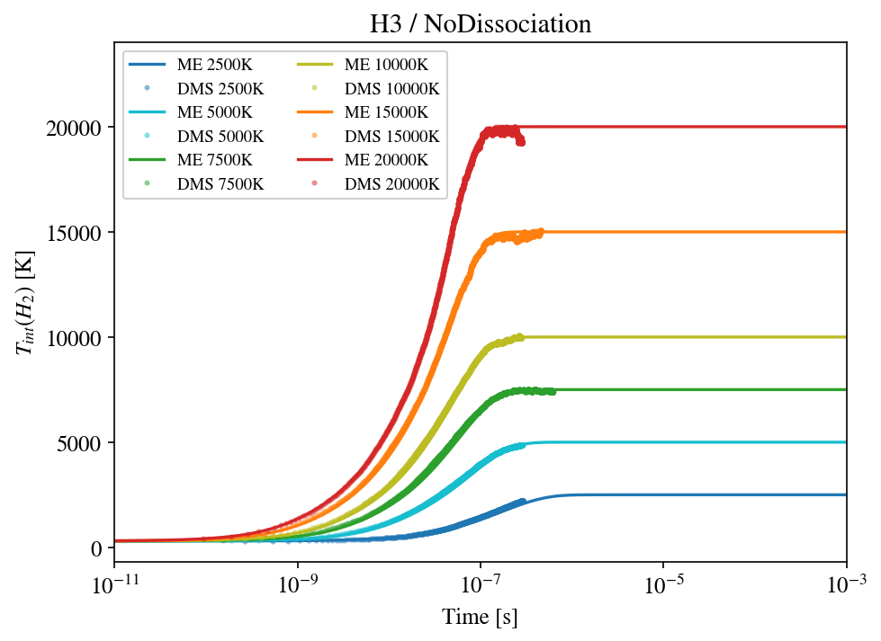
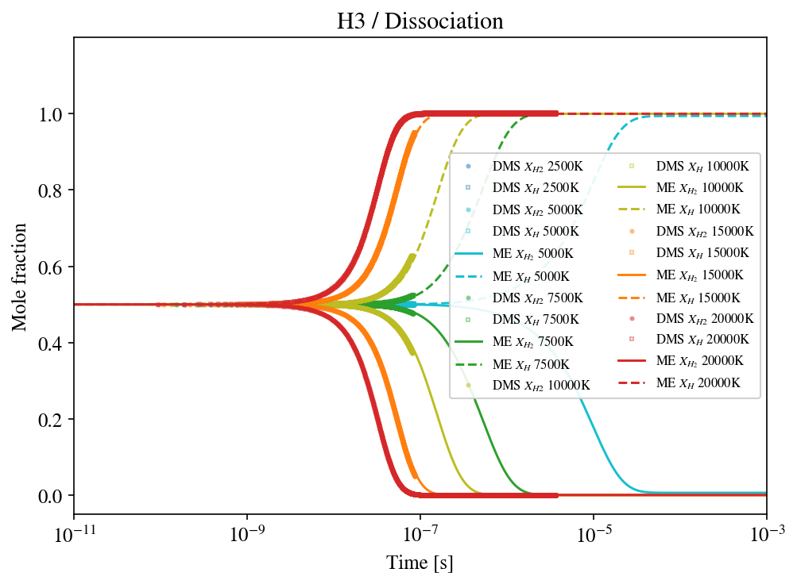
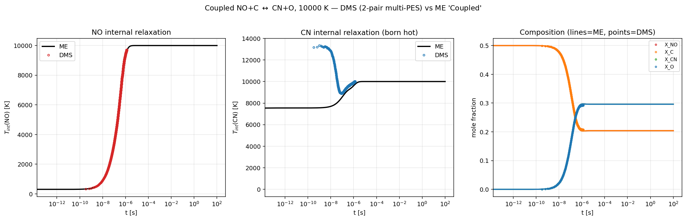

Validation
dmsAIR is validated against Master-Equation (ME) reference solutions from PLATO for all production systems. The verification matrix spans both homogeneous (H2 + H) and heterogeneous (CNO: NO+C / CN+O) collision systems, across the three reactive regimes the solver must reproduce — inelastic relaxation, exchange (reactive rearrangement), and dissociation. In the comparison plots below, solid lines are the ME reference and points are the DMS result; both are built from the same QCT database so the comparison is strictly like-for-like.
H2 + H (3-body, homogeneous)
Six temperatures, 2 500–20 000 K, in both the no-dissociation (pure inelastic) and with-dissociation regimes.
Inelastic relaxation. The H2 internal temperature Tint(t) climbs from the cold initial state to the imposed bath temperature; the DMS points track the ME relaxation at every temperature.
{kind=link}

H2 + H internal-energy relaxation: DMS (points) vs ME (lines) for the no-dissociation regime across 2 500–20 000 K.
Dissociation. With the dissociation channel enabled, H2 is consumed and atomic H is produced; the DMS mole-fraction trajectories XH2(t) and XH(t) overlay the ME curves over five decades in time.
{kind=link}

H2 + H dissociation: species composition XH2, XHfrom DMS (points) vs ME (lines) across 2 500–20 000 K.
Quantitatively: internal-energy relaxation ⟨Eint⟩(t) lands within
3 % of ME at 20 000 K and within 10 % at 10 000 K (slower convergence at lower
Ttr/Tint mismatch); the QSS dissociation rate k_DD matches ME within
statistical noise once Np ≥ 105. Reference ME curves are
read from postprocessing/Reference/<T>K/ (local group storage — reference
data is not tracked in the repository; see Post-processing).
CNO systems (3-body)
Three subsystems × three PESs × six regimes × five temperatures = 270
production cases, compared against PLATO’s
MasterEquationAnalysis/<subsys>/<T>/ reference set.
Inelastic_4A↔ DMSinelasticExchange1↔ DMSexchange1(CN+O channel)Exchange2_4S↔ DMSexchange2(CO+N channel)Exchange1_Dissociation↔ DMSexchange1+dissociationExchange2_4S_Dissociation↔ DMSexchange2+dissociationDirectDissociation↔ DMSdirectdissociation(DMS restricts the dissociation channel to direct trajectories — no transient CN or CO bound intermediate)TotalDissociation↔ DMStotaldissociation(DMS keeps every dissociation trajectory, direct and exchange-mediated)
Post-processor: postprocessing/Postprocessing/postprocessing.py
--system CNO.
Multi-PES and coupled reactive chemistry (NO+C / CN+O)
The degeneracy-weighted multi-PES sampler (running several Born–Oppenheimer surfaces in one heat-bath run) and the coupled multi-collision-pair reactive machinery were validated against controlled PLATO ME references at 10 000 K, built from the same QCT database so the comparison is strictly like-for-like.
Multi-PES inelastic (NO+C on 2×UCI_2A1 + UCI_4A2): after correcting a union-vs-intersection bug in the ME
Inelastic_Globalgenerator, the DMS and ME internal-temperature relaxations overlap to 0.8 % of span (\(\tau_{\rm DMS}/\tau_{\rm ME} = 1.016\)). This established that the multi-PES sampler reproduces the electronically-mixed dynamics directly, in one run, rather than by summing separate per-PES simulations.Coupled NO+C ↔ CN+O (two collision pairs, both multi-PES; NO inelastic + CN inelastic + exchange NO→CN, with the reverse CN→NO from dynamics in the DMS and from detailed balance in the ME): the composition (\(X_{\rm NO}, X_{\rm C}, X_{\rm CN}, X_{\rm O}\)) and the NO internal relaxation reproduce to ≤1.6 % across the whole trajectory and converge onto the same CN+O-favoured equilibrium. The nascent CN internal energy differs transiently (the DMS forms CN hot from the exothermic exchange, the thermal state-to-state ME kernel does not carry that collision-energy → product-energy correlation) but both reach 10 000 K at equilibrium.
{kind=link}

Coupled NO+C ↔ CN+O at 10 000 K, DMS (points) vs ME (lines). Left: NO internal-temperature relaxation. Middle: CN internal temperature — born hot from the exothermic exchange in the DMS, rising from the thermal ME kernel; both reach the 10 000 K equilibrium. Right: species composition (NO+C → CN+O reactive progress), reproduced to within ≈2 % of the ME equilibrium.
PES weighting follows the electronic-degeneracy ratios of the reactant manifold
(gNO_C / gCN_O / gCO_N), with the doublet surface doubled (2A1
standing in for both doublet sheets). Ready-to-run decks across every system,
PES configuration, regime and temperature are generated under inputs/ by
inputs/generate_cases.py.
H2 + H2 (4-body)
Inelastic and dissociation regimes at 10 000 and 20 000 K. Used to exercise the 4-body code path (arrangement codes 0, -1, -2, 3..6); reference ME not available for all channels, so primary validation is the regression suite.
Note
The 4-body dissociation classifier was corrected on 2026-07-09 (bond
counting replaces the shortest-pair test; see
Reactive Channels). H2+H2 dissociation results produced
with earlier binaries mis-scored single vs double dissociation and must
be regenerated; single-dissociation sub-channels (target / projectile /
exchange-assisted) are now reported separately in box.csv.
1D wall-bounded flows (Flow1D)
The 1D solver (1D simulations — Flow1D (Couette / Fourier)) was verified along a chain of independent checks rather than against a single reference, since no state-resolved ME analogue exists for wall-bounded flow:
Internal consistency. Fourier (H2/He, Kn ≈ 0.2, walls 300/1000 K): the three translational temperature components collapse onto one smooth Ttr(x); qx is spatially uniform and balances both wall tallies to ≈1 % with qL ≈ −qR; n·T is constant. Couette (∓500 m/s walls): τxy uniform in the gas and equal to both wall tallies to ≈6 %, with ~135 m/s velocity slip per wall.
Free-molecular asymptote. With collisions effectively switched off, the solver reproduces every analytic two-stream FM value to 1–2.5 % (Couette τ and p, Fourier q — including the quantum rotational effusion contribution).
Cross-code agreement. SPARTA and PICLas agree with each other within noise; dmsAIR joins them at Kn = 10 (τ ratio 0.98) and departs monotonically as collisionality increases (τ ratio 0.75 at Kn = 2, 0.61 at Kn = 0.5).
bmax convergence. Re-running Fourier at bmax = 7/10/13 Bohr leaves q flat, ruling out grazing-collision truncation as the cause of that departure.
The DMS-below-DSMC heat flux at finite Kn is therefore a physical result, not a numerical artifact: it is the rotational conduction channel (ab-initio cross-sections with a realistically slow H2 rotational relaxation, versus the ~31 % share carried by a VHS kernel at Zrot = 100). Against the ASML rarefied-H2 experiments the DMS points agree within the ±12–15 % local statistical noise; note that at the fitted accommodation α ≈ 0.29 the wall dominates and dilutes the rotational model to 3–6 % of the heat flux, which is why classical DSMC also matched those experiments.
Regression test suite
make regression runs three golden-output checks:
intstudy_3body_H3— IntegratorStudy on H3 default grid.scatmap_3body_CNO— ScatteringMap on CNO/NO+C.scatmap_4body_H4— ScatteringMap on H4.
All three must pass before committing any change to the collision or integration code path.